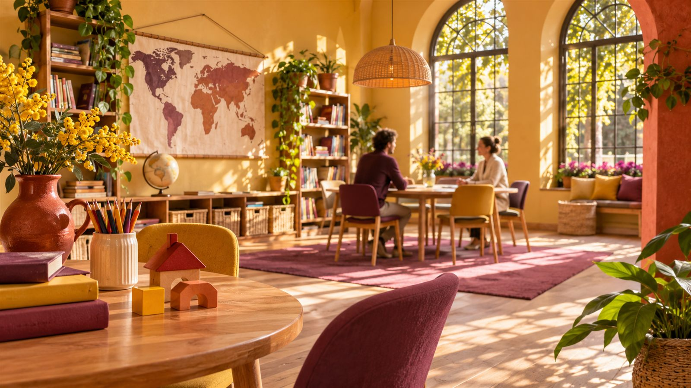

Встретиться
и познакомиться
Представляемся, задаём вопрос и слушаем ответ.
Английский в понятных ситуациях
Детская школа английского
Подобрать пробный урокПосмотреть подробнееАнглийский для детей
Говорить о том, что интересно.
Понимать смысл. Не бояться ошибаться.

Представляемся, задаём вопрос и слушаем ответ.
What do you like?
Что тебе нравится?I like drawing.
Мне нравится рисовать.Знакомые слова становятся инструментом разговора. Темп и сложность подбираются после знакомства с ребёнком.
Знакомство с языком через предметы, действия и короткие реплики.
Связать несколько предложений и понять собеседника.
Сравнить варианты и поддержать разговор на знакомую тему.
На пробном уроке важно увидеть, как ребёнок включается в общение. После встречи обсудим исходный уровень и подходящую группу.
До начала занятий договоримся о понятной цели. Например, рассказать о себе или задать вопрос в знакомой ситуации.
Без обещаний результата к заданной датеПример — концепт для портфолио
Продолжительность, размер группы и расписание уточняются до записи.
Знакомство с языком начинается с простых ситуаций. На пробном уроке преподаватель подбирает задания под исходный уровень.
Возможны небольшие задания на повторение. Нагрузка и помощь родителя зависят от возраста и программы.
До начала занятий стоит договориться о понятных целях: представиться, задать вопрос, рассказать о себе. Затем сравнивать результат с этими задачами.
Оставьте контакт родителя. Имя ребёнка и другие личные сведения в форме не нужны.
Форма показывает сценарий заявки. Данные не отправляются и не сохраняются.